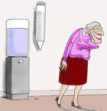

 Et Lesbiske Litteraturhjørne - nu med et twist af queer og en dunst af trans.
Radio dunst lever endnu - stadig i muteret lesbisk form! Denne lørdag aften kommer udsendelsen bl.a. til at handle om et nyt magasin for hanblebber, et queer-magasin, en transedagbog og lidt om overskæg.
Det hele krydres med musik af både lesbisk og dunstet herkomst og en hemmelig gæst i studiet.
Vært: Maria Maud
Lyt til Det Lesbiske Litteraturhjørne lørdag d. 28. maj kl. 19-21 på 92.9 FM (88.9 kabel) eller live streaming på www.radioti.dk
|